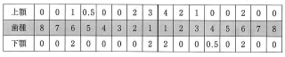

CFI（Community Fluorosis Index）は、Deanが1942年に提唱した指標で、地域における歯のフッ素症の発生程度を評価する。
| 点数 | 分類 | 診査基準 |
|---|---|---|
| 0 | normal | 正常の形態、透明度 |
| 0.5 | questionable | 点在するわずかな白斑 |
| 1 | very mild | 白濁部が歯面の1/4以下 |
| 2 | mild | 白濁部が歯面の1/2以下 |
| 3 | moderate | 全歯面の白濁および小窩、着色を認める |
| 4 | severe | 形成不全を伴う、着色も著しい |
CFI = 個人の点数の合計 ÷ 被験者数
| CFI値 | 判定 |
|---|---|
| 0.4以下 | 公衆衛生上問題なし |
| 0.4〜0.6 | 境界域 |
| 0.6以上 | 流行地（飲料水中のフッ化物量を減らす必要性あり） |
24歳の男性。CFIの検査結果を表に示す。
この被検者の値はどれか。1つ選べ。

【解説】表から各歯のフッ素症の程度を読み取り、最も症状の強い2歯でその個人の程度を判定する。表の値を確認すると、最も重症度の高い歯が「moderate（3点）」に該当するため、この被験者のCFI値は3となる。